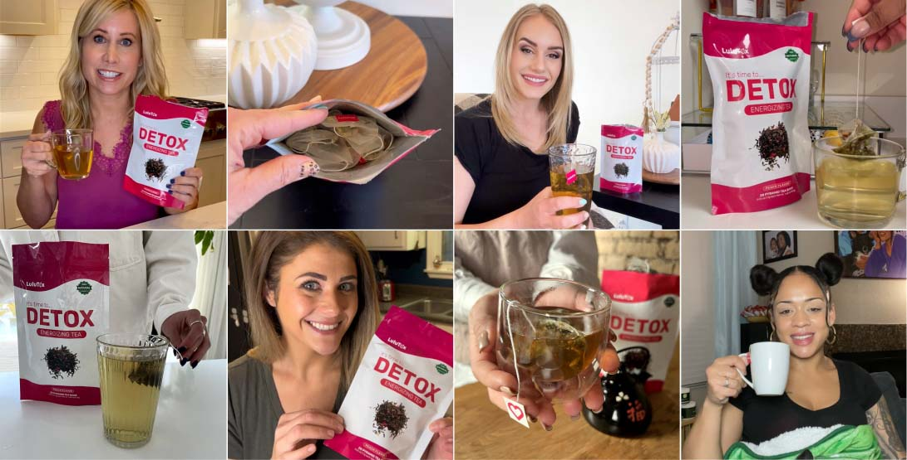
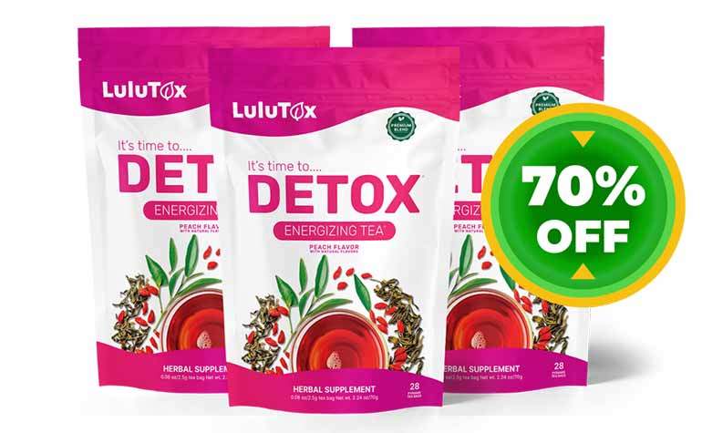

Werbeanzeige
Echte Kundenbewertungen!
Tausende von Deutschen schwärmen von diesem neuen Wellness-Trend
Vielleicht hast du bereits von Lulutox-Tee gehört. Tausende von Menschen schwören auf seine Fähigkeit, die Fettverbrennung anzukurbeln, überschüssige Pfunde dahinschmelzen zu lassen und Blähungen zu reduzieren.
Falls du noch mehr Gründe brauchst, warum sich Lulutox so gut verkauft, lade ich dich herzlich dazu ein, weiterzulesen.
Im Internet wimmelt es nur so vor positiven Bewertungen: Einige berichten von weniger Verdauungsproblemen, andere schätzen den Energieschub, den sie durch den Tee erhalten, und wieder andere loben seine unterstützende Wirkung auf das Immunsystem.
Lass uns einen Schritt weitergehen und Lulutox und die vielen zufriedenen Kunden etwas näher kennenlernen.
"Ich habe in den letzten acht Jahren deutlich zugenommen, vor allem um die Hüfte und Taille herum. Und wenn ich abnahm, waren die Kilos gleich wieder da", sagt Talia S.
Nach Rücksprache mit meinem Arzt und umfangreichen Untersuchungen wurde mir erklärt, dass die Ursache meines Gewichtsproblems hormoneller Natur ist, was erklärt, warum herkömmliche Methoden zur Gewichtsabnahme bei mir kaum halfen.
Tatsächlich hat mir mein Arzt Lulutox empfohlen. Der Tee schmeckt lecker und ich freue mich jeden Tag darauf, ihn zu trinken.
Nach ein paar Tagen bemerkte ich, dass ich mich irgendwie leichter fühlte. Und dann begann ich auch einen Unterschied auf der Waage zu sehen. Ich trinke Lulutox inzwischen seit drei Monaten und habe bereits 6 Kilo abgenommen." - Talia S.
Wenn du mit deinem Gewicht kämpfst, gehörst du möglicherweise zu den Tausenden von Menschen, die unter hormoneller Gewichtszunahme oder den Auswirkungen der Menopause leiden. Und, ja, auch Männer können von hormonell bedingter Gewichtszunahme betroffen sein.
Lulutox ist keine Zauberei oder Magie und enthält auch keine fragwürdigen Inhaltsstoffe. Die patentierte Mischung verwendet nur hochwertige Zutaten aus der Natur. Einige dieser Zutaten wurden bereits vor über tausend Jahren für medizinische Zwecke verwendet.
"Zwischen den Hitzewallungen und all den anderen Symptomen, die mit der Menopause einhergehen, war die hormonelle Gewichtszunahme das Letzte, was ich gebrauchen konnte." - Jane V.
"Mein Arzt verschrieb mir Medikamente, die zwar beim Abnehmen halfen, aber meine anderen Symptome verschlimmerten. Auf Anraten einer Freundin, die mir monatelang von Lulutox vorgeschwärmt hatte, beschloss ich, es auszuprobieren ... Zu meiner großen Überraschung spürte ich innerhalb kurzer Zeit einen deutlichen Unterschied. Die Pfunde um die Taille herum purzelten, ich fühlte mich energiegeladener und sogar etwas ruhiger. Heute habe ich immer mindestens einen dreimonatigen Vorrat im Schrank!" - so Jane V.
Es ist schwierig, bei Nahrungsergänzungsmitteln, Tabletten und ähnlichen Produkten am Ball zu bleiben. Aber Lulutox lässt sich leicht in deine Routine integrieren. Stell dir vor, etwas zu haben, auf das du dich jeden Tag freust ...
wie eine Tasse luxuriösen Tee und die Gelegenheit, allein mit deinen Gedanken zu sein ... während du von altbewährten Inhaltsstoffen profitierst, die zahlreiche Vorteile mit sich bringen.
Lulutox ist eine auszeichnete Möglichkeit, die Darmgesundheit zu fördern. Viele der enthaltenen Superfoods sind seit Langem bekannt dafür, die Darmgesundheit zu fördern ...
Einige Inhaltsstoffe können Blähungen lindern und den regelmäßigen Stuhlgang fördern, während andere sogar Entzündungen reduzieren können. Keine Sorge, Lulutox enthält keine Abführmittel. Die vollkommen natürliche Mischung regt lediglich die natürlichen Prozesse deines Körpers an.
Ich kämpfe seit einer halben Ewigkeit mit Blähungen, und es war eine ständige Quelle von Unbehagen und Frustration. Ich habe viele Heilmittel und Diäten ausprobiert, aber nichts hat langfristig geholfen. Dann stieß ich auf den Lulutox-Tee, der mich wirklich umgehauen hat. Ich war es gewohnt, nach jeder Mahlzeit einen Blähbauch zu haben. Jetzt kann ich fast alles essen, was ich möchte!" - Martha Y.
Die schiere Anzahl an positiven Erfahrungsberichten bestätigt, dass es sich nicht um ein Einzelphänomen handelt – Menschen lieben Lulutox nicht nur wegen seines Geschmacks, sondern auch, weil der Tee ihnen hilft, Blähungen zu bekämpfen. Lulutox ist für viele zu einem absoluten Muss geworden!
"Ich habe erstmal eine Packung Lulutox gekauft, um meine Blähungen zu reduzieren. Nach ein paar Wochen habe ich direkt einen 3-monatigen Vorrat nachbestellt. Ich war wirklich überrascht, wie schnell es mir geholfen hat." - Anthony J.
⚡Flash Sale: 70% Rabatt - nur für begrenzte Zeit⚡
Bei vielen Menschen scheitern Diäten aufgrund mehrerer Schlüsselfaktoren:
Radikale Änderung des Lebensstils: Diäten führen zum Scheitern, weil sie immer zeitlich begrenzt sind. Sie können sogar deinen Stoffwechsel und damit auf lange Sicht auch das Abnehmen verlangsamen. Und leider erleben viele Menschen nach einer Diät den berüchtigten Jo-Jo-Effekt.
Mangelndes Engagement: Wir alle streben danach, gesünder zu leben, um das Beste aus unserem Leben zu machen. Diäten erfordern häufig ein hohes Maß an Engagement und Willenskraft. Wenn man versucht, allen Verlockungen und Gelüsten zu widerstehen, endet das oft in Frustration, was zum frühzeitigen Abbruch der Diät führen kann.
Nachteilhafte restriktive Ernährung: Leider sind strikte Ernährungseinschränkungen nur schwer einzuhalten und können dauerhafte Spuren hinterlassen. Viele Menschen entwickeln am Ende eine ungesunde Beziehung zum Essen, lernen, "verbotene" Lebensmittel zu fürchten oder haben Schuldgefühle, wenn sie sich etwas gönnen. Ganz zu schweigen von möglichen ernährungsbedingten Mängeln.
Zugrundeliegende Ursachen werden nicht berücksichtigt: Diäten ignorieren oft die tieferen Ursachen für schlechte Essgewohnheiten, wie emotionales Essen oder Stress. Stell dir vor, du klebst ein Pflaster auf eine offene Wunde. Es hilft nicht wirklich.
Statt auf Diäten zu setzen, suchen immer mehr Menschen nach sinnvollen dauerhaften Lösungen, wobei Lulutox oft die erste Wahl ist.
Warum? Ganz einfach – Lulutox hat viele Inhaltsstoffe, die einen gesunden Lebensstil fördern.
"Als jemand, der schon etwas älter ist, hatte ich so meine Probleme mit meinem Gewicht. Diäten glichen einer Achterbahnfahrt ... die Kilos kamen und gingen. Es war ermüdend und entmutigend. Aber dann entdeckte ich den Lulutox-Tee. Der Unterschied ist spürbar."
"Der Tee half mir, meinen Appetit natürlich zu kontrollieren und gesündere Entscheidungen zu treffen, ohne das Gefühl zu haben, dass ich auf etwas verzichte. Es war keine schnelle oder magische Lösung, sondern vielmehr ein sanfter Anstoß. Letztendlich fällt es mir leichter, ein gesundes Gewicht zu halten, und ich habe wieder die Kontrolle über meinen Körper." - James W.
"Ich habe jahrelang verschiedene Diäten ausprobiert und bin immer wieder gescheitert. Je älter ich wurde, desto schwieriger fiel es mir. Dann stieß ich auf den Lulutox-Tee, und WOW, was für ein Unterschied. Der Tee half mir, meinen Appetit auf eine Weise zu regulieren, die sich natürlich und dauerhaft anfühlt."
"Ich habe nicht mehr das ständige Verlangen zu naschen und ungesundes Essen hat seinen Reiz verloren. Lulutox hat es mir ermöglicht, bessere Entscheidungen zu treffen, ohne das Gefühl zu haben, mich einzuschränken. Lulutox ist einfach, effektiv und ein unverzichtbarer Bestandteil meiner täglichen Routine." – Coraline B.
Chronische Müdigkeit, stressbedingte Erschöpfung und genereller Energiemangel sind weltweit zu einer Epidemie geworden. Viele Menschen greifen in solchen Situationen zu Kaffee oder Energy-Drinks für einen schnellen Energieschub.
Menschen, die Lulutox trinken, haben dieses Problem nicht mehr.
"Als jemand, der ständig mit Energiemangel und Müdigkeit gekämpft hat, ging bei mir nichts mehr ohne Kaffee. Aber das Nachmittagstief schlich sich trotzdem ein."
"Als ich anfing, Lulutox gegen meine Blähungen zu schlürfen, bemerkte ich, dass dieser erstaunliche Tee nicht nur meine Blähungen reduzierte ... ich fühlte mich auch energetischer und das Energieloch am Nachmittag war weg. Es ist wie ein sanfter Energieschub, der mich durch den ganzen Tag begleitet." - Margot
"Ich habe einen körperlich sehr anspruchsvollen Job und gegen Ende der Woche bin ich total erschöpft. Früher habe ich eine Tasse Kaffee nach der anderen getrunken, aber ich brauchte immer mehr Koffein, um keine Durchhänger zu haben."
"Ich habe Lulutox von einer Freundin bekommen und war quasi vom ersten Schluck an begeistert. Es war genau das, was ich brauchte, um mich energetischer zu fühlen und meine Wochenenden voll auszukosten, anstatt völlig k.o. zu sein." - Clémence
Jetzt Verfügbarkeit prüfen⚡Flash Sale: 70% Rabatt - nur für begrenzte Zeit⚡
Stell dir vor, du könntest dein Wohlbefinden für weniger als einen Euro pro Tag fördern. Das ist buchstäblich weniger als eine Tasse Kaffee ...
Die Wirkung der Lulutox-Zutaten ist wissenschaftlich bestätigt, aber noch wichtiger ist, dass zufriedene Kunden aktiv für das Produkt werben.
Unserer Meinung nach gibt es kein besseres Vertrauenssignal als dieses.
Nutzer berichten von erstaunlichen Ergebnissen und konnten vor allem diese Beschwerden lindern:
➡️ Müdigkeit
➡️ Schwierigkeiten beim Abnehmen
➡️ Blähungen und Darmprobleme
➡️ Stress und Unruhe
Deshalb sind wir überzeugt, dass Lulutox auch dir helfen kann. Wenn dir nur eines dieser Symptome bekannt vorkommt, solltest du dir selbst einen Gefallen tun und Lulutox so bald wie möglich ausprobieren.
Emilie, 57 Jahre
Mein Naturmediziner hat mich vorher und nachher untersucht und war von der Verbesserung meines Gesundheitszustands beeindruckt. Danke für das Produkt. Ich werde es jetzt meinen Freundinnen weiterempfehlen!
Chloé, 46 Jahre
Ich habe endlich meine Wespentaille zurück! Nach zwei Schwangerschaften hatte ich zugenommen. Aber mit dem Lulutox Detox-Tee habe ich es von Größe 40 auf 36 geschafft! Ich bin überglücklich und fühle mich bestens. Danke!
Juliette, 52 Jahre
Ich habe schon andere Entgiftungstees ausprobiert, aber sie haben nie so gut funktioniert. Ich habe ihn vor ca. einem Jahr entdeckt und trinke ihn immer noch. Die beste Entscheidung, die ich je getroffen habe! Ich bin BEGEISTERT.
Wenn du noch zögerst, solltest du bedenken, dass es eine 30-tägige Geld-zurück-Garantie gibt >>>
[Jetzt 70% reduziert]: Kaufe den Lulutox-Entgiftungstee immer auf der offiziellen Website. Nur so kannst du sicher sein, dass du ein authentisches und hochwertiges Produkt erhältst, das dir dabei hilft, deine Abnehm-Ziele zu erreichen.
 70% RABATT EINLÖSENAusverkaufsrisiko: hoch
🗓 Dieses Sonderangebot ist verfügbar:
Nachdem ich ständig Werbung für den Lulutox-Tee gesehen habe, entschied ich mich, das Angebot wahrzunehmen und bei Bedarf einfach die 30-tägige Geld-zurück-Garantie zu nutzen. Ich habe den Tee eine Woche lang zweimal täglich getrunken (ja, ich weiß, es wird einmal empfohlen, aber ich liebe den Geschmack :D). Ich kann sagen, dass ich mich SUPER FÜHLE!!! Keine Blähungen mehr und meine Haut hat sich verbessert!
Isabelle Lambert
BIN BEGEISTERT! Ein toller Start in meine Abnehm-Reise. Die Bestellung kam zügig an und der Tee schmeckt richtig lecker 😊 Ich freue mich wirklich darauf zu sehen, wie sich mein Körper durch den Tee verändert und wie sich mein Wohlbefinden verbessert. Vielen Dank!
Charlotte M.
Hol dir den Tee jetzt 70% reduziert !
VERFÜGBARKEIT PRÜFEN